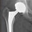

OsiriX Development Guide
Documentation is provided for the following plugins.
Arthroplasty Templating
Read the Arthroplasty Templating Plugin Guide
Ejection Fraction
Read the Ejection Fraction Plugin Guide
Documentation is provided for the following plugins.
Read the Arthroplasty Templating Plugin Guide
Read the Ejection Fraction Plugin Guide